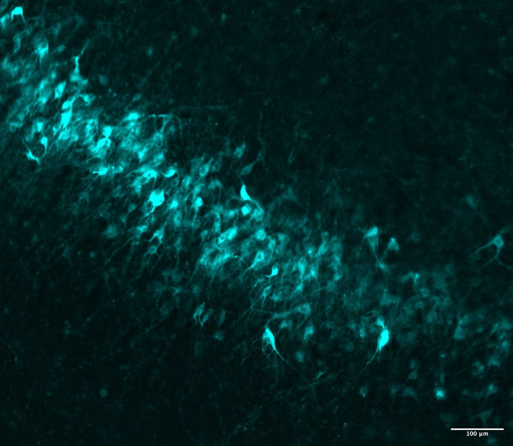

Human brain tissue
Human brain tissue from neurosurgical resections provides the foundation for our work on epilepsy.
EPILEPSY GENETICS & CELLULAR NEUROSCIENCE
We study human brain tissue from neurosurgical resections to investigate the genetic and cellular mechanisms of epilepsy.
Explore our research
01 / RESEARCH
Human brain tissue from neurosurgical resections provides the foundation for our work on epilepsy.
Neurons have the ability to both increase and decrease activity of cells with which they have connections. We use vector-mediated optogenetic approaches to turn the brain’s own neurons into seizure-stopping tools.
Mutations in many of the same genes and genetic loci are associated with risk of both epilepsy and ASD. Persons with both refractory epilepsy and autism offer an opportunity to better understand shared pathways between these two disorders. We use a variety of next generation genetic sequencing techniques to study shared genetic pathways and slice electrophysiology to study how circuits behave in these disorders.
Samples from neurosurgical resections allow for the study of the human brain directly, but their study is limited by how long the tissue remains viable under culture conditions. We are investigating ways to improve longevity and viability of brain slices to further our ability to study brain circuitry from operative specimens.
02 / PUBLICATIONS
Nature Neuroscience, 2024.
Journal of Neurosurgery, 2022.
Lancet, 2021.
JAMA Neurology, 2019.
Experimental Neurology, 2019.
03 / PEOPLE
NEUROSURGEON & CLINICIAN–SCIENTIST
I am an assistant professor of neurosurgery at the University of California, San Francisco. My lab studies the genetic and cellular mechanisms of epilepsy using human brain tissue from neurosurgical resections.
04 / CONTACT
For collaborations in epilepsy genetics, cellular neuroscience, and human brain tissue research.
Please include “Andrews Lab” in the subject line of your inquiry.
john.andrews@ucsf.edu